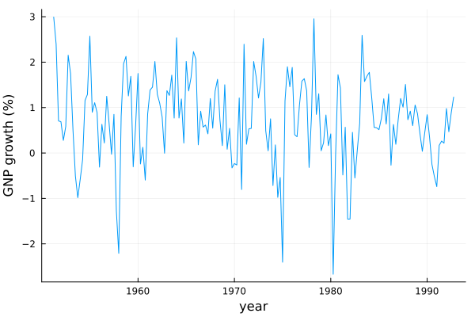
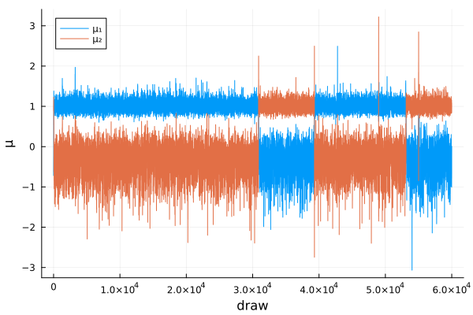

Markov switching model
This example follows Section 4.2.2 of Chib (1995): a two-state Markov mixture model for the quarterly growth rate of U.S. real GNP. The latent states are drawn jointly by forward filtering and backward sampling, which shows how to use a latent variable whose full conditional is not a standard distribution.
This is not an exact replication of Table 5. The paper does not give the data or the distribution of the initial state. The posterior also has two modes that the Gibbs sampler rarely moves between, which makes the estimate unreliable, as shown below.
using MargLikeGibbsOutput, Distributions, LinearAlgebra, Random, Statistics, PlotsData
Real GNP from 1951.1 to 1992.4 in billions of 1987 dollars, from the March 1994 vintage of the series GNPC96 in ALFRED. The growth rate $y_t$ is 100 times the log difference, giving 167 observations from 1951.2 to 1992.4.
gnp = [1511.2, 1557.1, 1594.9, 1606.2, 1617.3, 1621.8, 1631.3, 1666.8, 1696.2, 1704.8, 1696.2, 1679.6,
1669.9, 1667.5, 1686.9, 1708.8, 1753.3, 1769.1, 1788.8, 1804.8, 1799.2, 1810.6, 1814.6, 1837.4,
1849.3, 1848.8, 1864.6, 1841.0, 1800.8, 1815.4, 1851.4, 1891.2, 1915.1, 1947.7, 1941.8, 1953.6,
1988.1, 1983.3, 1985.8, 1974.0, 1991.1, 2018.9, 2048.4, 2090.1, 2117.3, 2140.6, 2157.7, 2157.6,
2187.4, 2215.3, 2253.6, 2271.0, 2329.3, 2347.3, 2375.4, 2380.6, 2429.1, 2462.5, 2503.8, 2560.3,
2613.8, 2618.5, 2642.7, 2657.8, 2674.2, 2685.5, 2717.9, 2732.8, 2770.3, 2815.6, 2836.0, 2840.6,
2883.6, 2886.0, 2901.7, 2892.2, 2885.5, 2877.9, 2913.0, 2889.7, 2959.7, 2965.4, 2981.2, 2997.4,
3058.4, 3110.5, 3148.4, 3197.8, 3279.4, 3295.6, 3297.2, 3322.1, 3298.4, 3304.3, 3272.2, 3254.6,
3177.3, 3213.9, 3275.5, 3323.6, 3386.8, 3400.5, 3412.7, 3448.9, 3503.9, 3561.7, 3610.8, 3599.3,
3629.1, 3737.9, 3769.8, 3819.3, 3821.2, 3829.8, 3862.0, 3868.3, 3884.6, 3782.3, 3780.5, 3846.2,
3901.6, 3882.8, 3904.9, 3848.5, 3793.0, 3810.3, 3789.4, 3791.7, 3816.5, 3916.7, 3978.8, 4046.6,
4119.1, 4169.4, 4193.0, 4216.4, 4238.1, 4270.5, 4321.8, 4349.5, 4406.4, 4394.6, 4422.3, 4430.8,
4463.9, 4517.8, 4563.6, 4633.0, 4667.1, 4710.3, 4738.7, 4789.0, 4830.7, 4851.6, 4853.4, 4875.1,
4916.4, 4933.4, 4920.9, 4895.4, 4859.3, 4867.5, 4880.3, 4890.9, 4939.0, 4962.2, 5006.4, 5068.4]
y = 100 * diff(log.(gnp))
plot(range(1951.25; step = 0.25, length = length(y)), y; label = "", xlabel = "year", ylabel = "GNP growth (%)")
Model
The model is
\[y_t \mid z_t = j \sim N(\mu_j, \sigma^2), \qquad \Pr(z_t = j \mid z_{t-1} = i) = p_{ij}, \qquad \Pr(z_1 = j) = \pi_{1j},\]
with priors $\mu_1 \sim N(0, 2)$, $\mu_2 \sim N(0.75, 2)$, $\sigma^2 \sim IG(4, 4)$ and, for the rows $q_1$ and $q_2$ of the transition matrix $P$, $q_1 \sim \text{Dirichlet}(4, 1)$ and $q_2 \sim \text{Dirichlet}(1, 4)$. The initial distribution $\pi_1$ is taken to be uniform. Both the hyperparameters α and the parameter block q hold $q_i$ in column $i$.
prior = (μ₀ = [0.0, 0.75], τ₀² = 2.0, a₀ = 4.0, b₀ = 4.0, α = [4.0 1.0; 1.0 4.0], π₁ = [0.5, 0.5])Likelihood
The likelihood with the states integrated out is the product of the one-step-ahead prediction densities, which the forward filter computes together with the filtered state probabilities $\Pr(z_t = j \mid y_1, \dots, y_t, \theta)$.
function forwardfilter(θ, y, π₁)
filtered = Matrix{Float64}(undef, length(y), length(π₁))
predicted, loglik = π₁, 0.0
for (t, yₜ) in enumerate(y)
joint = predicted .* pdf.(Normal.(θ.μ, sqrt(θ.σ²)), yₜ)
loglik += log(sum(joint))
filtered[t, :] = joint / sum(joint)
predicted = θ.q * filtered[t, :]
end
return filtered, loglik
endLatent states
The states are drawn jointly from $p(z \mid y, \theta)$ by sampling backwards from the filtered probabilities, using $\Pr(z_t = j \mid y, z_{t+1} = l, \theta) \propto p_{jl} \Pr(z_t = j \mid y_1, \dots, y_t, \theta)$. The full conditional of a latent variable only needs to support rand, since latent variables are integrated out rather than evaluated. Any type with a rand method will do:
struct StatesPosterior
filtered::Matrix{Float64}
q::Matrix{Float64}
end
function Base.rand(rng::AbstractRNG, d::StatesPosterior)
n = size(d.filtered, 1)
z = Vector{Int}(undef, n)
z[n] = rand(rng, Categorical(d.filtered[n, :]))
for t in n-1:-1:1
z[t] = rand(rng, Categorical(normalize(d.filtered[t, :] .* d.q[z[t+1], :], 1)))
end
return z
end
z_conditional(state, y, prior) = StatesPosterior(first(forwardfilter(state, y, prior.π₁)), state.q)Parameter blocks
Given the states, the full conditionals of $\mu$ and $\sigma^2$ are as in the mixture model with equal variances, and the rows of $P$ are independent Dirichlet with the prior parameters updated by the number of transitions between the states.
function μ_conditional(state, y, prior)
regimes = eachindex(prior.μ₀)
B = [1 / (1 / prior.τ₀² + count(==(j), state.z) / state.σ²) for j in regimes]
μ̂ = [B[j] * (prior.μ₀[j] / prior.τ₀² + sum(y[state.z .== j]) / state.σ²) for j in regimes]
return MvNormal(μ̂, Diagonal(B))
end
σ²_conditional(state, y, prior) = InverseGamma(prior.a₀ + length(y) / 2,
prior.b₀ + sum(abs2, y - state.μ[state.z]) / 2)
function q_conditional(state, y, prior)
transitions = [count(==((i, j)), zip(state.z, state.z[2:end])) for j in axes(prior.α, 1), i in axes(prior.α, 2)]
return product_distribution(Dirichlet.(eachcol(prior.α + transitions)))
end
markovmixture = GibbsModel(
conditionals = (μ = μ_conditional, σ² = σ²_conditional, q = q_conditional),
latents = (z = z_conditional,),
loglik = (θ, y) -> last(forwardfilter(θ, y, prior.π₁)),
logprior = (θ, prior) -> sum(logpdf.(Normal.(prior.μ₀, sqrt(prior.τ₀²)), θ.μ)) +
logpdf(InverseGamma(prior.a₀, prior.b₀), θ.σ²) +
logpdf(product_distribution(Dirichlet.(eachcol(prior.α))), θ.q),
)Posterior
A long run of the Gibbs sampler shows that the posterior has two modes: one with $\mu_1 < \mu_2$, where state 1 is a recession, and one with the states interchanged, which the prior does not rule out. The sampler moves between them only rarely.
rng = Xoshiro(1995)
init = (μ = [0.0, 1.0], σ² = 1.0, q = [0.8 0.2; 0.2 0.8])
draws = gibbs(rng, markovmixture, y, prior, init; ndraws = 60_000, burnin = 600)
plot(reduce(hcat, [draw.μ for draw in draws])'; label = ["μ₁" "μ₂"], xlabel = "draw", ylabel = "μ")
Table 5 of the paper reports the mode with $\mu_1 < \mu_2$. The posterior means and standard deviations over the draws in that mode are close to the ones in the paper:
recession = filter(draw -> draw.μ[1] < draw.μ[2], draws)
table5 = ["μ₁" => (d -> d.μ[1], -0.313, 0.314), "μ₂" => (d -> d.μ[2], 1.038, 0.111),
"σ²" => (d -> d.σ², 0.672, 0.089), "p₁₁" => (d -> d.q[1, 1], 0.743, 0.098),
"p₂₂" => (d -> d.q[2, 2], 0.911, 0.042)]
for (name, (parameter, chibmean, chibstd)) in table5
x = parameter.(recession)
println(rpad(name, 5), "mean = ", round(mean(x); digits = 3), ", std = ", round(std(x); digits = 3),
" Chib (1995): ", chibmean, ", ", chibstd)
endμ₁ mean = -0.349, std = 0.356 Chib (1995): -0.313, 0.314
μ₂ mean = 1.025, std = 0.124 Chib (1995): 1.038, 0.111
σ² mean = 0.664, std = 0.089 Chib (1995): 0.672, 0.089
p₁₁ mean = 0.734, std = 0.102 Chib (1995): 0.743, 0.098
p₂₂ mean = 0.914, std = 0.047 Chib (1995): 0.911, 0.042Marginal likelihood
The estimate uses 6000 draws per run, as in the paper, and evaluates the identity at the draw with the highest posterior density. The paper reports -229.496 with a numerical standard error of 0.028.
estimate = chib(rng, markovmixture, y, prior, init; ndraws = 6_000, burnin = 600, θstar = posteriormode)ChibEstimate(log marginal likelihood = -228.77, NSE = 0.094)A brute-force average of the likelihood over $2 \cdot 10^7$ draws from the prior gives -229.76 for these data. Chib's estimator is not reliable here: the estimate depends on how much of each mode the runs happen to visit, and it varies between runs by much more than the numerical standard error suggests. Runs that stay in the mode with $\mu_1 < \mu_2$ give about -230.2, since they miss the posterior mass in the other mode. The numerical standard error only measures the variability of an estimate from a sampler that explores the whole posterior.